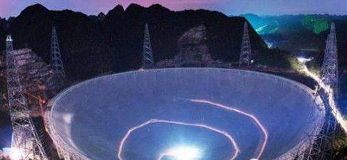
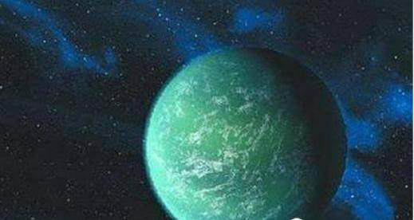

世界最大单口径射电望远镜：中国天眼发现第二地球，有望星际移民
2019-08-22 10:33
500米口径球面射电望远镜，简称FAST，同时也被誉为‘中国天眼’。中国天眼于1994年由我国天文学家南仁东提出构想，从预研到建成历时22年，于2016年9月25日落成启用。是由中国科学院国家天文台主导建设，具有我国自主知识产权、世界最大单口径、最灵敏的射电望远镜。FAST将在未来20~30年保持世界领先地位

“天眼”工程总工程师兼首席科学家南仁东介绍，借助这只巨大的“天眼”，科研人员可以窥探星际之间互动的信息，观测暗物质，测定黑洞质量，甚至搜寻可能存在的星外文明。众多独门绝技让其成为世界射电望远镜中的佼佼者，这也将为世界天文学的新发现提供重要机遇。

近日科学家们表示中国天眼天文望远镜发现了一颗宜居星球，在这颗星球上他们发现了液态水和植被，认为这将会是另一个地球。 当然有液态水存在的星球有很多，科学家为什么认为这颗星球是颗宜居星球，因为植被。科学家们在上面发现了绿色的植被。既然存在植被那么证明这颗星球的环境肯定适宜生物的存活。有可能成为第二个地球
如果人类能够进行星际移民的话，它将是我们最好的选择。同时科学家们也表示这次宜居星球的发现是中国在天文望远镜以及宇宙探索上取得的巨大成效。 科学家们相信随着天眼的继续探测，总有一天我们也能发现外星人。但是，著名物理学家史蒂芬·霍金曾发声：发现外星人信号，千万别回应后果自负！